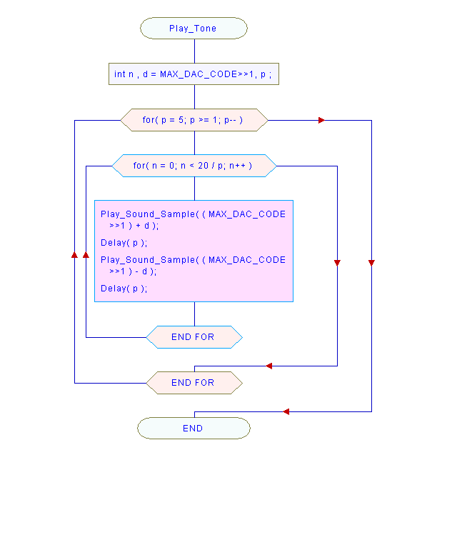

Flowchart
Play_Tone
Type
:
Code + Comment
File
:
C:\Users\Alex\Documents\Teaching\ESD\2015-Spring\Expansion Board\Test Code\TFT-TS-BL-Profiler-RTX\src\sound.c

Crystal FLOW for C [
www.sgvsarc.com
]